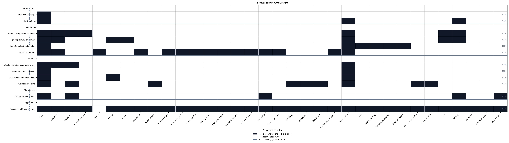

Sheaf Track Coverage
This page summarizes which sheaf fragment tracks are
bound for each IMRAD row in manuscript/sheaf/manifest.yaml.
The matrix is regenerated at compose time.
Totals: 95 present / 95 bound / 0 missing (gray).
| Color | Meaning |
|---|---|
| Black | Track present (bound and fragment exists) |
| White | Absent (not bound for this row) |
| Gray | Missing (bound but fragment file absent) |
Introduction
Introduction (group)
Motivation and scope
Contributions ## Methods
Methods (group)
Bernoulli–Ising analytical model
pymdp simulation harness
Lean formalization boundary
Sheaf composition ## Results
Results (group)
Mutual-information parameter sweep
Free-energy decomposition
T-maze active-inference rollout
Validation invariants ## Discussion
Discussion (group)
Limitations and outlook ## Appendix
Appendix (group)
Appendix: full track coverage

output/data/sheaf_coverage_matrix.json.Appendix row 16_appendix_full_sheaf.md binds 33 fragment
track types as a composability proof (registry defines 34 types;
optional layers is methods-only).